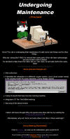

News
Site Cleanup Complete! What's
New? - Entry
Date: 15th November 2026
If you have visited my site on or after the 4th, you may have noticed that
the site started showing the following:

This is because I had decided to take the site down, as mentioned by the
maintenance page, I felt that the site had
become way too bloated, and broken. It needed an urgent fix and restructure. To
my memory, I have:
- Restructured some parts of the site to be better organised
- Fixed any missing assets
- Found a hit counter that's compatible with systems like the Amiga.
- Added a new Ext. Links section
- Updated the credits
- Added a lot of new photos
- Changed the file format of all artworks, to reduce file size and
increase compatibility. Updated galleries to match.
- Changed file names of artworks for better organisation and structure.
Updated galleries to match.
- Revamped about section
- Made the warning on the art page stand out more
- Added TheOldNet's webring widget to the bottom of the webpage.
- Slight update to the Desktops section, now includes Amiga Workbench
- Footer text updated
- Did you know and Header updated to remove crappy text that I have grown
to hate. Added some new ones.
Some other things that are planned are:
- Actually finishing the character portraits
- Drawing assets for the 404 section
Other News...